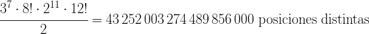

El cubo de Rubik es un rompecabezas creado por el escultor húngaro Ernő Rubik en 1974. Es el juguete más vendido de la historia (teniendo en cuenta los rompecabezas y los que no lo son), y se pueden encontrar innumerables variantes del original, que es un cubo 3x3x3 con seis caras de colores que habitualmente «enfrentan» al amarillo y al blanco, al azul y al verde y al rojo y al naranja.
El cubo tiene 8 vértices (las piezas de las esquinas), con 3 colores cada uno. De ellos, 7 se pueden orientar de forma independiente, y la orientación del octavo depende de los otros. De ahí obtenemos 37 posiciones distintas. Por otra parte, los 8 vertices pueden permutarse, obteniendo de esto 8! posiciones distintas.
Por otro lado, tiene 12 aristas (las piezas que hay entre cada dos vértices), con dos colores cada una. De ellas, 11 se pueden orientar independientemente, y la orientación de la otra depende de las primeras. De aquí obtenemos 211 posiciones distintas. Por otra parte, las 12 aristas pueden permutarse, por lo que tendríamos 12! posiciones distintas. Pero la paridad de las permutaciones de vértices y aristas nos elimina la mitad de las opciones, por lo que en realidad tenemos 12!/2 posiciones distintas.
La pregunta consiste en averiguar si cuál es el número minimo de movimientos que voy a necesitar para resolver el cubo sea cual sea la posición en la que encuentre el cubo. Desde hace más de 10 años sabemos que con 20 movimientos se puede resolver cualquier cubo pero la pregunta sigue siendo demostrar si se puede reducir el número de movimientos. A este número de movientos que se conocen como número de Dios.
Tenéis más imformación en www.gausianos.com